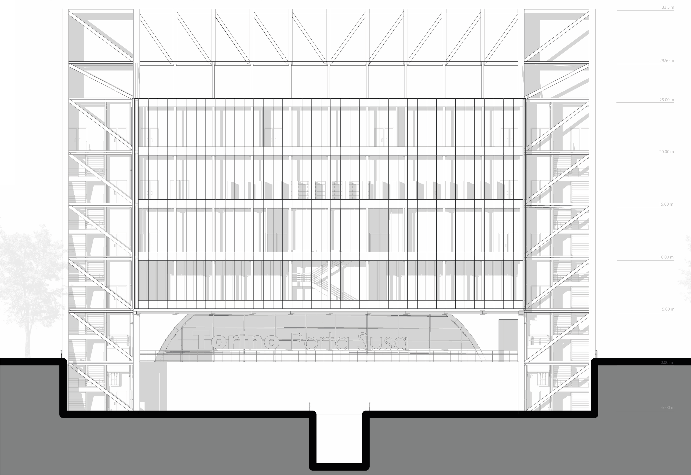
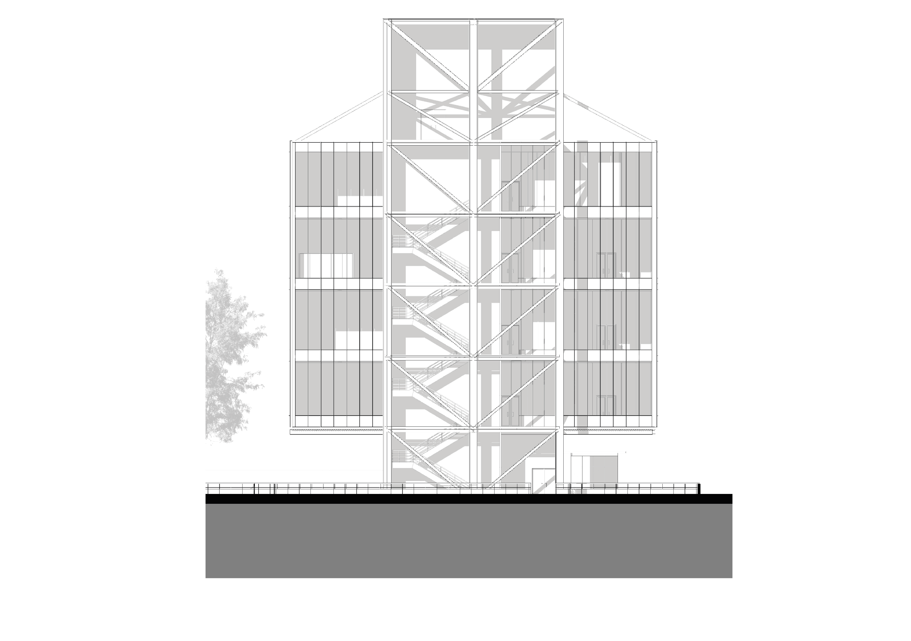
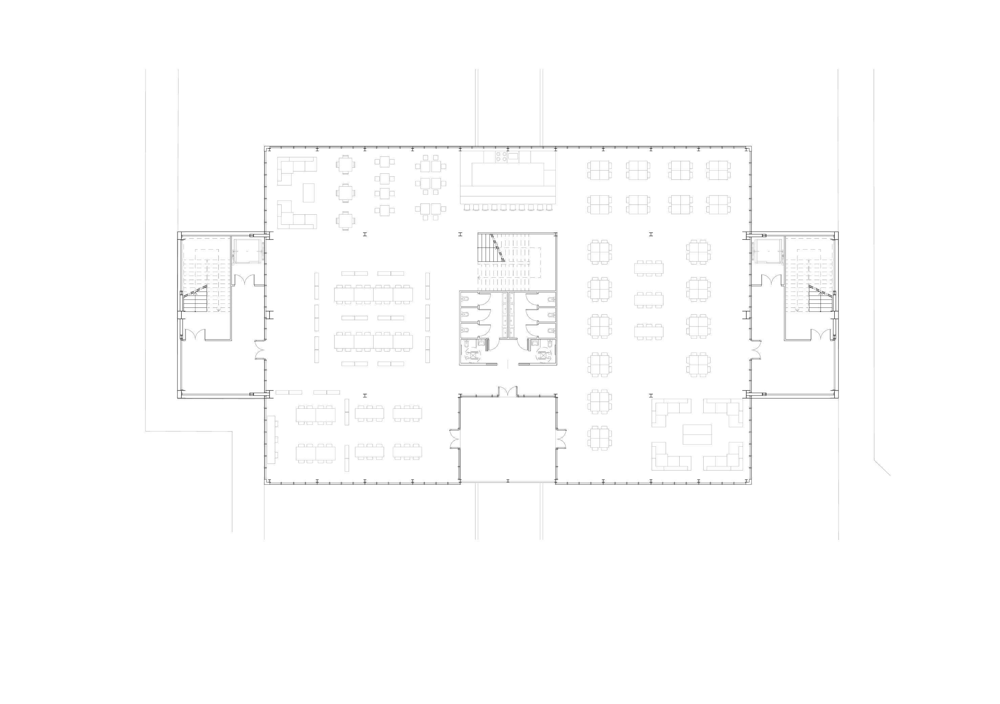
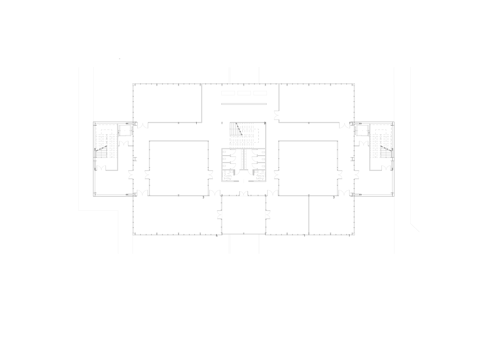
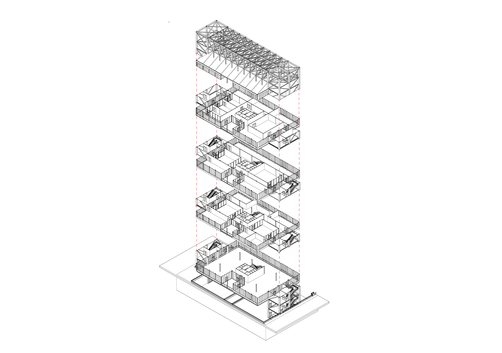

Biblioteca sospesa - 2023
L'edificio è ubicato a Torino nel quartiere Cit Turin. Il progetto prevede la realizzazione di un edificio polifunzionale, sorretto da una struttura totalmente in acciaio a vista con una forma a ponte, per non interferire con la presenza di una rampa che collega il lotto alla stazione metropolitana. Si è pensato di realizzare un edificio che sembrasse sospeso, lasciando completamente a vista la sua struttura portante.